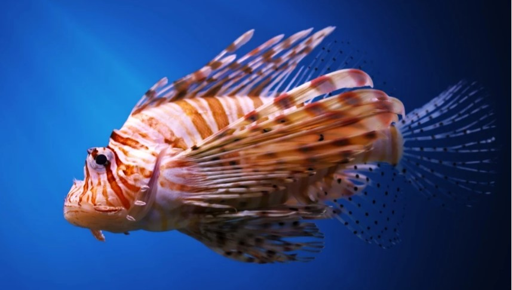

A human centric philosophy, or anthropocentrism, as defined by the Encyclopedia Brittanica is defined as a "philosophical viewpoint arguing that human beings are the central or most significant entities in the world." and that "...regards humans as separate from and superior to nature and holds that human life has intrinsic value while other entities (including animals, plants, mineral resources, and so on) are resources that may justifiably be exploited for the benefit of humankind."
We found one glaring instance where this human centric philosophy was prevelant.
If you go diving in the Carribean, you will hear that there is free rein to kill lion fish and is actually encouraged. The lion fish have been declared an invasive species in the area. In response, one industrious individual trained an autonomous submarine to hunt down and give lion fish a lethal injection. So while we would consider it unethical to have an AI kill other humans, we seem to have no problems with killing an innocent fish just swimming by. Some ethics discourse is going into the concept of "invasive" and "non-native". Some feel that the terms are used most as a political tool to blame other living creatures for problems that humans actually create.
With global warming and climate change on the rise, we cannot assume that the habitats laid out in the 1800's can or will remain static. The world evolves, plants and animals migrate over time. Will we continue to kill plants and animals because we don't think they are where they belong? Or will we use this as indications on what is going on in the world and learn to adapt and help as many plants and animals as we can to adapt as well?